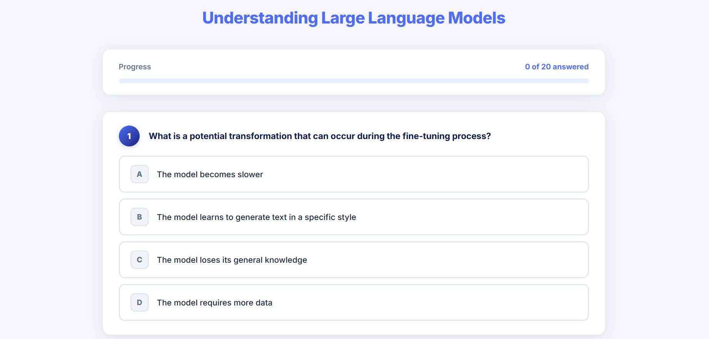
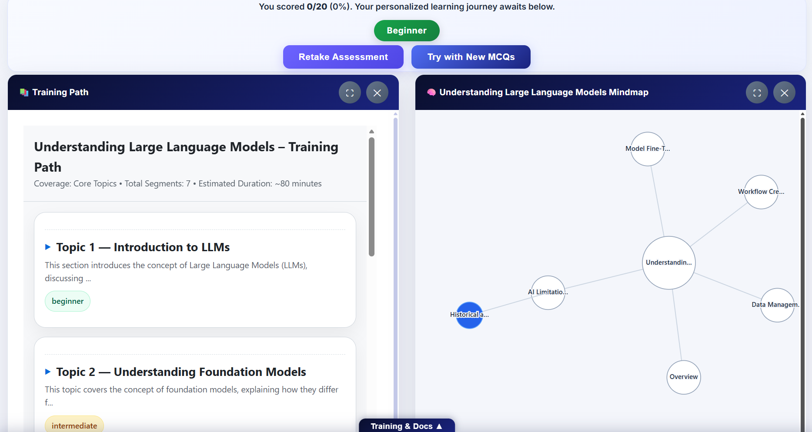

Barathwaj Maadhavan
Builder & Watch Collector
Learning Synthesis Agent
AI-driven adaptive learning platform for modern knowledge transfer.

Overview
To modernize the knowledge transfer (KT) process and eliminate the inefficiencies of long-form, monolithic training videos, I architected and developed Learning Synthesis Agent – a dynamic, AI-driven learning platform that decomposes multi-hour onboarding sessions into bite-sized, digestible modules.
The platform automates the extraction of knowledge and the creation of a responsive, web-based training portal, significantly reducing the cognitive load of new hires and allowing them to master complex internal processes through efficient, modular, and adaptive learning.
The Challenge
Traditional onboarding relied on lengthy, monolithic training videos that overwhelmed new hires. Cognitive overload was high, retention was low, and there was no way to personalise the learning experience based on existing knowledge levels.
How It Works
The pipeline begins by ingesting training videos and their associated transcripts, which are then processed by an LLM to identify core concepts, categorise them into a hierarchical structure of topics and subtopics, and determine optimal timestamps for segmentation. The system then automatically clips the original media into focused, topic-specific videos and synthesises descriptive summaries for each.
To ensure rapid deployment, the entire platform – including the site structure, content descriptions, and HTML scaffolding – is generated programmatically. The system utilises a templating engine where an LLM injects the processed content into a standardised UI layout.
Key Features
Personalised Learning Assessment
Upon entry, users undergo an automated assessment to gauge their existing knowledge level – beginner, intermediate, or expert – which the system uses to dynamically tailor the learning path.

Interactive Learning Interface
The front-end interface, which I designed to mirror an intuitive, Udemy-style structure, features a mind-map navigation panel on the side that allows for seamless browsing of the curriculum.
Programmatic Content Generation
The entire platform – including site structure, content descriptions, and HTML scaffolding – is generated programmatically. A templating engine uses an LLM to inject processed content into a standardised UI layout, enabling rapid deployment and consistency.
Results & Impact
- Reduced cognitive load – decomposed multi-hour sessions into bite-sized modules.
- Personalised learning – adaptive paths based on assessment results.
- Rapid deployment – programmatic generation of the entire platform.
- Improved retention – modular, focused content improves knowledge retention.
Key Learnings
Building the Learning Synthesis Agent reinforced the value of automation in content creation. By programmatically generating the platform structure, we eliminated manual content curation and ensured consistency across modules. I also learned that personalisation is key – learners engage more deeply when content adapts to their existing knowledge level. The mind-map navigation proved to be a powerful tool for visualising the curriculum and reducing cognitive friction.